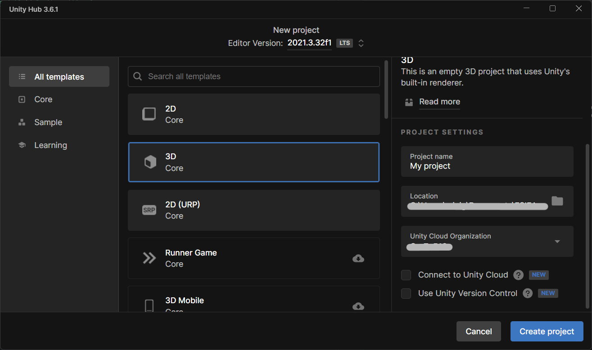
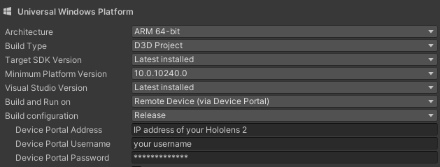
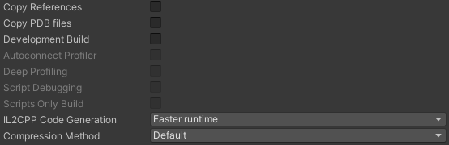

La création d'un projet Unity a son importance, car c'est sur celle-ci que le projet va reposer. Une erreur peut avoir une conséquence casquade et la correction de ce type d'erreur est complexe.
Création du projet
Cliquer sur "New project"
Entrer le nom du projet, sa location sur votre PC et décocher "Unity Cloud"

Vous pouvez maintenant créer votre projet
Setup du build
Lorsque votre projet a fini de charger, vous arrivez sur l'environnement Unity.
Avant de commencer le projet, il faut modifier les settings pour avoir un environnement de travail adapté à ses besoins.
Cliquer sur File -> Build Settings
Sélectionner Universal Windows Platform puis cliquer sur Switch Platform
Configurer le UWP de la manière suivante :
Vous renseignerez l'IP de votre casque Hololens 2 ainsi que vos identifiants dans cette section.

La fenêtre peut maintenant être fermée
Cliquer sur Edit -> Project Settings -> XR Plugin Management puis cliquer sur installer
Dans le Project Settings, cliquer sur Player puis ajouter si demandé